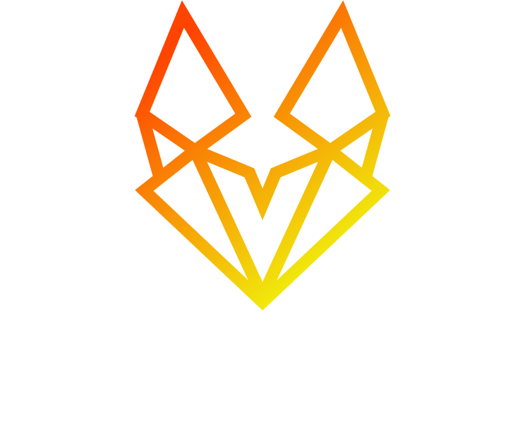

Front-end
Interfaces modernas, acessíveis e performáticas.

DEVELOPERTransformando ideias complexas em produtos digitais rápidos, escaláveis e bem construídos.
Analista de Sistemas e Desenvolvedor Full Stack com mais de 10 anos de experiência, da interface à infraestrutura.
Atuo em sites, sistemas web, SaaS, lojas virtuais, aplicativos móveis e produtos digitais, unindo engenharia, UX/UI e visão de negócio para criar experiências claras, sólidas e memoráveis.
Interfaces modernas, acessíveis e performáticas.
APIs, serviços e regras de negócio consistentes.
Deploy, containers e infraestrutura confiável.
Sistemas escaláveis, legíveis e bem estruturados.
Uma seleção entre aplicações, produtos web e protótipos. Cada case parte de um problema diferente — e termina em uma experiência completa.
48 projetos com
links verificados ↗
Ferramentas são escolhas de projeto. A base é resolver o problema com clareza, performance e espaço para evoluir.
Desenvolvimento independente de produtos digitais completos, incluindo engenharia full stack, design gráfico e web design.
Análise, sustentação e desenvolvimento de sistemas para o Tribunal de Justiça de Minas Gerais, com atuação full stack.
Criação e evolução de APIs REST, interfaces modernas, integrações entre sistemas e suporte técnico evolutivo.
Plataforma web de alta demanda e escalabilidade, novas funcionalidades front-end e back-end, integrações externas e modernização de código legado.
Desenvolvimento e sustentação de aplicações corporativas, melhorias em APIs e módulos front-end, correções e otimizações de performance.
Desenvolvimento full stack em projetos corporativos, integrações, APIs e melhorias de performance e organização de código.
Aplicações web completas, estruturação de arquitetura e padrões, APIs REST e projetos WordPress para clientes corporativos.
Desenvolvimento e manutenção de sistemas internos, dashboards, relatórios gerenciais e melhorias de performance no back-end.
Sites e aplicações web, projetos WordPress, aplicativos móveis com Ionic/Angular e Node.js, peças digitais e suporte ao marketing.
Aplicações web, APIs, manutenção de sistemas, correção de bugs, produção gráfica e suporte técnico.
Atuação no Cespe/Cebraspe, Call Tecnologia, Oi S.A. e setor de eventos, construindo uma base sólida em operação, suporte técnico, comunicação e relacionamento com clientes.
const developer = {
name: "Johnathan Amorim Rios",
role: "Full Stack Developer",
focus: [
"Performance", "Architecture",
"Scalability", "User Experience"
],
build() {
return "Great digital products";
}
};Entender produto, negócio e problema.
↗Definir arquitetura, tecnologias e estratégia.
↗Desenvolvimento front-end + back-end.
↗Qualidade, testes e performance.
↗Deploy, monitoramento e evolução.
↗Tem um desafio, uma ideia ou um produto para evoluir? Conte-me o contexto. A melhor solução começa com uma boa conversa.
ENTRAR EM CONTATO ↗